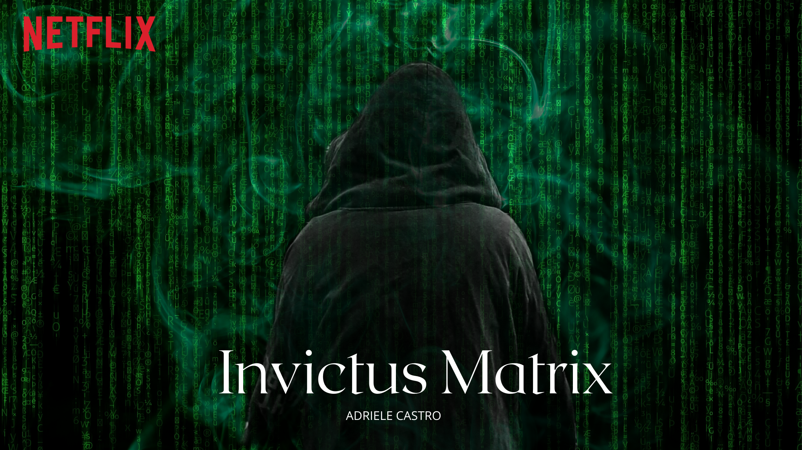
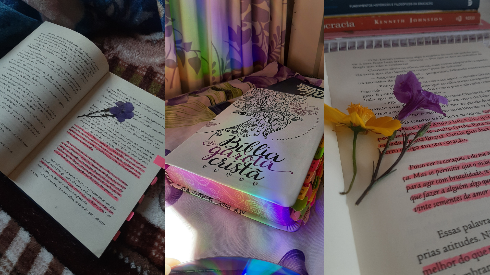
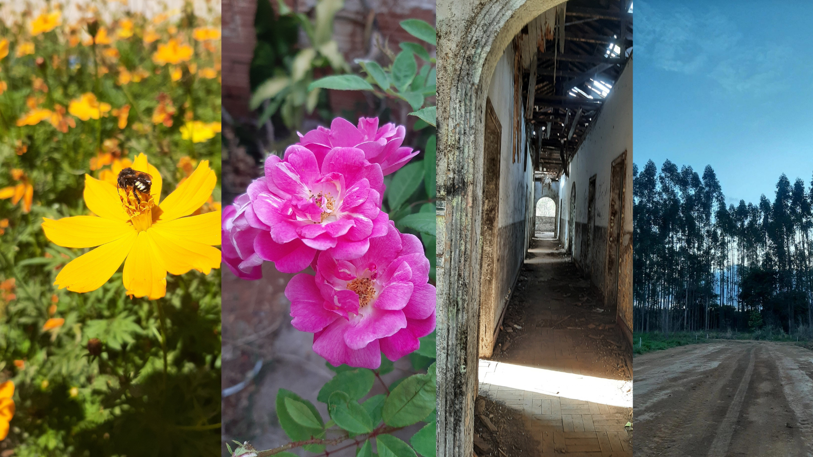
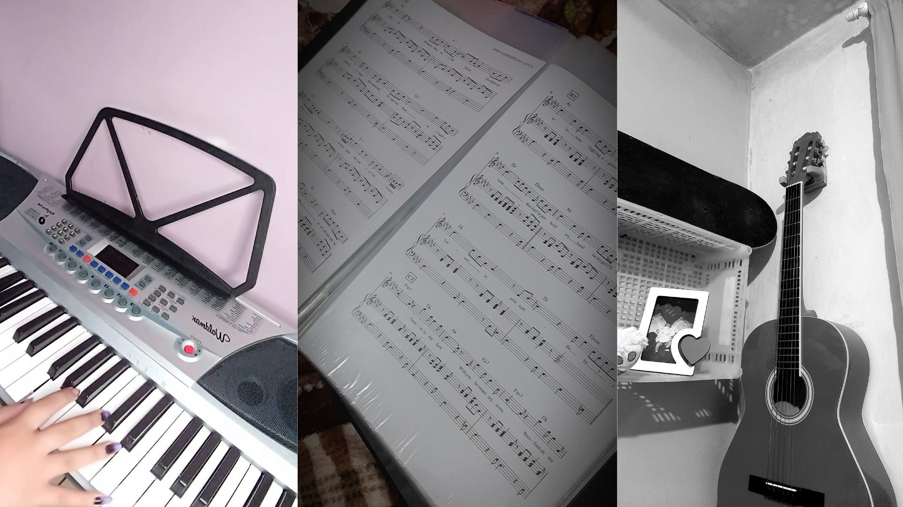
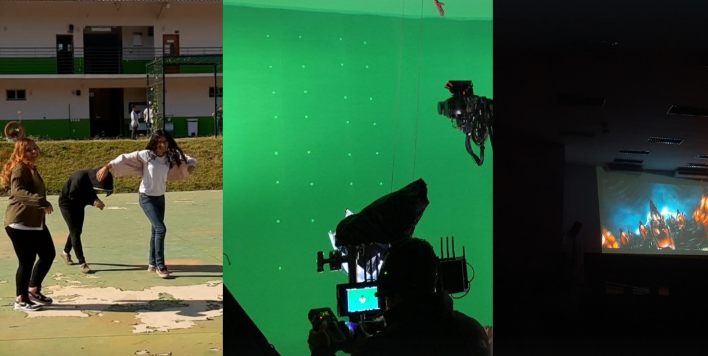

Me chamo Adriele, tenho 18 anos e estudo no IFTM de patrocínio Minas Gerais.
Sou uma menina super alegre e que vive rindo de tudo, gosto de muitas coisas
inclusive o mundo da arte, amo tudo que é arte, como músicas, danças, pinturas,
desenhos, atuação, instrumentos, entre outros.
PROJETOS
Um dos projetos que fiz parecido com esse Portfólio foi o site sobre os Jogos
Antigos que mais influenciaram para a evolução dos jogos na indústria do
entreterimento. Abaixo temos a imagem que da para ter uma pequena noção de
como ele ficou, mas se quiser vê-ló completo é só clicar neste linkJogos Antigosque você
será direcionado ao site.
Esse projeto que fiz foi um dos melhores na minha opinião, pois com ele eu pude
trabalhar com três coisas que amo, que é, atuar, dirigir e editar. Ele foi um
trabalho que fiz com 3 colegas e que o objetivo era refazer um mini filme
diferente da inspiração que nesse caso foi o filme Matrix.Invictus Matrix.

Logo após teremos um projeto que também fiz com ajuda de mais dois colegas,
fizemos um video que misturamos nossos talentos para reprodução deste trabalho,
eu fiquei com a parte da música juntamente com um de meus colegas, do desenho
junto com minha amiga, e fiquei também com a edição, novamente trabalhando com
a arte.
Música, desenho, anime.
Hobbies
Amo ler livros de varios gêneros, mas meus preferidos é a Bíblia, fantasia e ficção.
Ler é como viver em um outro mundo e sentir o que cada personagem dentro do livro senti,
é incrível.

Pensa uma pessoa que vive tirando fotos de tudo que vê, então essa sou eu
sempre amei tirar fotos das coisas, principalmente, da natureza, tudo que
faz parte dela eu amo.

Tocar é tão lindo, escutar cada nota de uma melodia é como se você estivesse em
um lugar perfeito, andando entre flores, escutando somente os passaros, música é
uma forma de expressar o que sentimos de mais lindo.

Cinema, quando digo isso não estou me referindo somente a ir ao cinema assistir,
mas sim de atuar, roterizar, dirigir, fotografa, filmar, editar e outras coisas,
pois cinema é muito mais do que somente filmes.

Ver o Pôr do Sol para mim é uma das melhores coisas que faço, sinto uma pasta
tão grande, ele é tão estupendo e perfeito, cada traço, cada cor, e isso tudo
feito com as mãos do maior e melhor artista que existe.
Flores como são belas, tão perfeitas, elas são uma representação de nós seres
humanos, pois elas passam por momentos difíceis, e assim como elas florescem,
assim também devemos florescer.


.png)